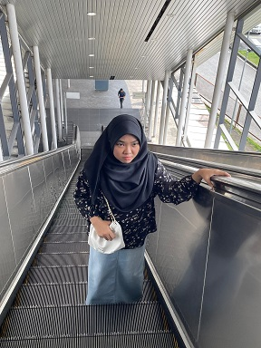
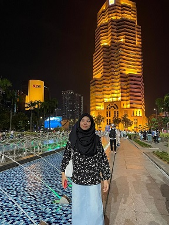

|  |
Hi I'm Nor Arifah Adlina from Klang, Selangor. I'm 20 year old born at Subang Jaya Medical Centre. Currently pursuing my studies at Universiti Teknologi Mara. I'm passionate about learning new skill. |
 |
| My Elementary
School | When I was 7 years old I went to school at Johan Setia. And I finished school at the age of 12. In our year, which is batch04, we managed to sit the UPSR exam. |
My Elementary
School | I went to school at kafa al-ma'ruf Johan Setia. When I was in 5th grade I took the UPKK exam and got an 8A result. I had many interesting experiences when I went to school here with my friends. |
My Secondary
School |
I went to school in Jalan Kebun when I was 13 years old. I also had the chance to feel the Pt3 exam my fund got a satisfactory result which made me get a science class for form 4 and form 5. |
University | after the SPM exam, I applied to which university and I got UiTM Arau. I got a pre-diploma which is 1 semester, for 6 months only. and the result that will determine what cost I will get during the diploma later (right now i'm studying at UiTM Merbok for diploma) |